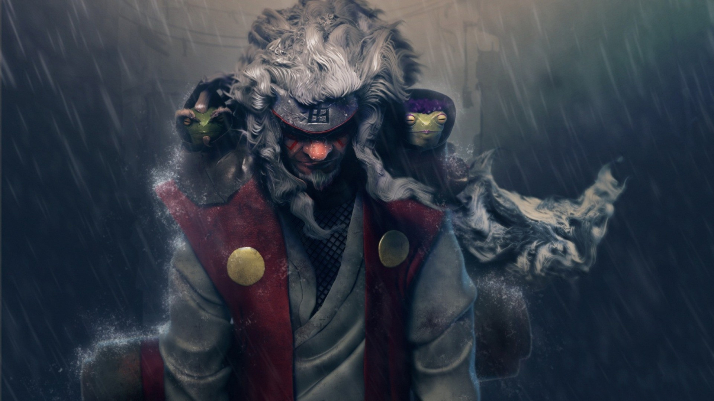

Jiraiya (自来也) was one of Konohagakure's Sannin. Famed as a hermit and pervert of stupendous ninja skill, Jiraiya travelled the world in search of knowledge that would help his friends, the various novels he wrote, and, posthumously, the world in its entirety - knowledge that would be passed on to his godson and final student, Naruto Uzumaki.
Jiraiya with Fukasaku and ShimaJiraiya was an exceptionally powerful shinobi, hailed as one of the greatest ninja of his generation and that Konoha ever produced. His true recognition came during the Second Shinobi World War when proved able to compete against Hanzō and his giant salamander Ibuse, and was dubbed a Sannin. Renowned groups like the Uchiha Clan and Seven Ninja Swordsmen of the Mist paled in comparison. Kisame Hoshigaki and Itachi Uchiha both admitted that together, even with assistance, they would at best reach a stalemate.